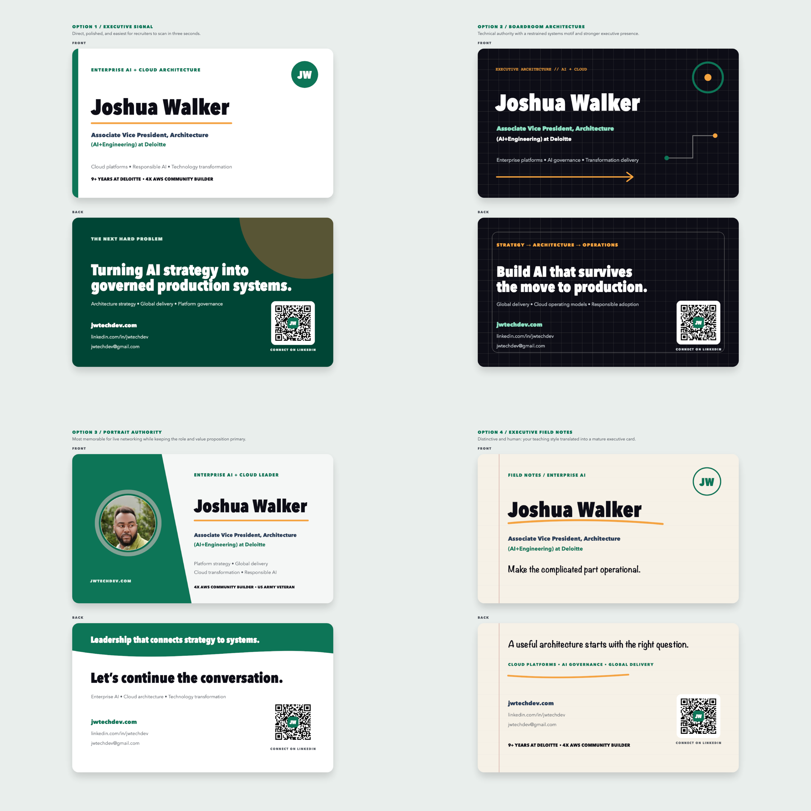

AFROTECH / EXECUTIVE NETWORKING
Executive business card directions
One positioning system with four visual approaches. The LinkedIn-first QR code is intended to convert conference conversations into executive recruiting follow-through.
